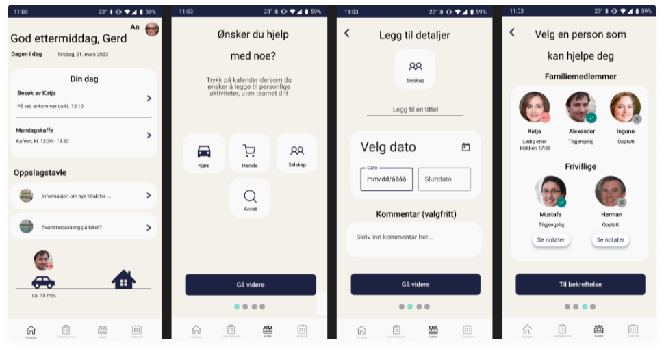
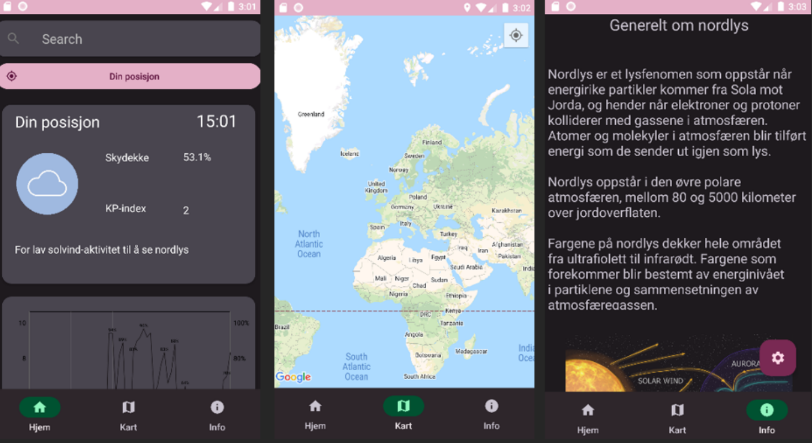
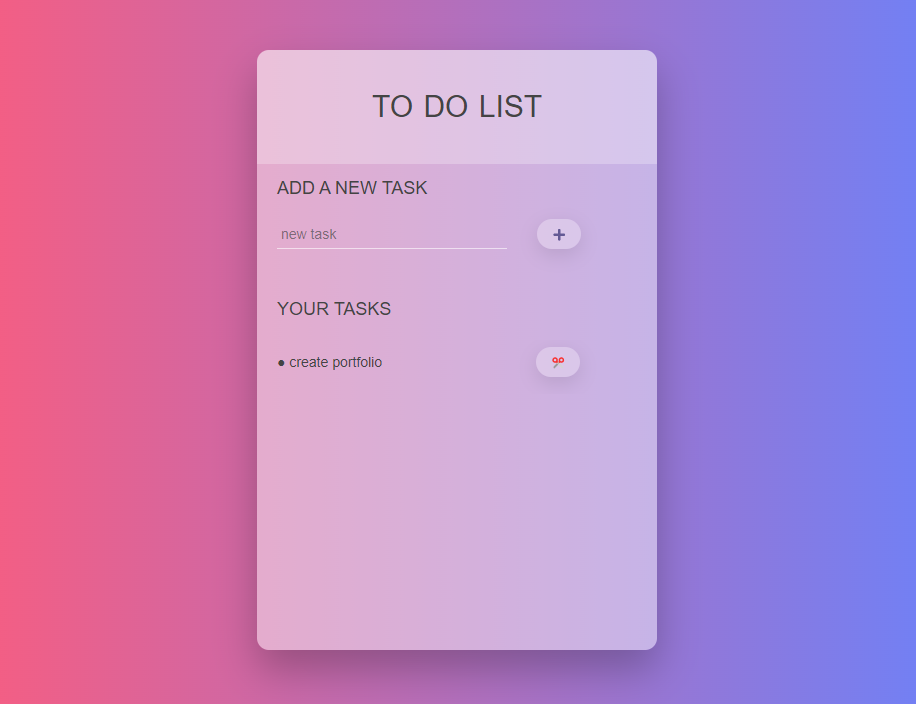
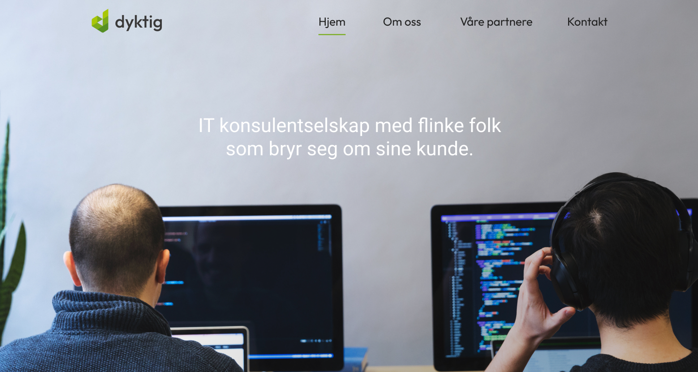

Who Am I?
Hello! My name is Julia and I am a UX designer and front-end developer set to graduate in June 2023 from University of Oslo with a bachelor's degree in "Informatics: Design, Use, Interaction. With a strong interest in front-end development, I have completed various online courses that focus on HTML, CSS, JavaScript and React, in addition to university courses that specialize in interaction design.
Interaction design and development are my passions because they allow me to pursue what I love: creating excellent user experiences, collaborating with diverse teams across disciplines, working with technology, and gaining valuable insights from people.
- I like to work structured and to have a plan, but I am also creative problem solver.
- Working alongside dedicated team members is something I enjoy, although I also value the freedom of independent work and planning.
- My prior experience in customer experience has allowed me to gain practical knowledge and skills over the years.
I am now eager to take on new challenges and experiences to build upon!
Design tools
- Figma
- Illustrator
- Photoshop
Programming
- HTML
- CSS
- JavaScript
- React
- Java
- Python
Education
My educational background is centered around my university degree in interaction design from UiO, The Faculty of Mathematics and Natural Sciences.
Additionally, I have completed several online courses on the Udemy platform that focus on both technical and visual development of user-friendly solutions, specifically in HTML, CSS and JavaScript.
-
University of Oslo // Bachelor's degree in Informatics: Design, Use, Interaction
Aug 2020 - June 2023
Interdisciplinary program placing a strong emphasis on user-experience design. Project-based courses designed to bring together human-computer interaction and information technology within agile/scrum teams. The design process as an iterative process involves researching, designing, prototyping, and testing.
-
OsloMet // One-year programme in Design and Communication in Digital Media
Aug 2019 - June 2020
A year's study in digital media design exploring range of media - photography, graphic design and websites. Idea development, understanding the use of different design tools and digital image processing/manipulation.
-
University of Economics in Bratislava, Slovakia // Master's degree in Tourism Management
Aug 2007 - May 2012
Degree recognized by Norwegian Agency for Quality Assurance in Education (NOKUT) as equivalent to a Norwegian Master Degree.
Portfolio
My portfolio showcases several of the design projects I have worked on, highlighting the UX design process that led to the development of the final products. These projects include blend of user research, wireframing, prototyping, and user testing, all aimed at creating effective and engaging digital experiences.
Among these projects, you will find university assignments, personal projects pursued during my freetime, and projects completed as a part of my work experience.
- 
-

-

- 
- 
- 